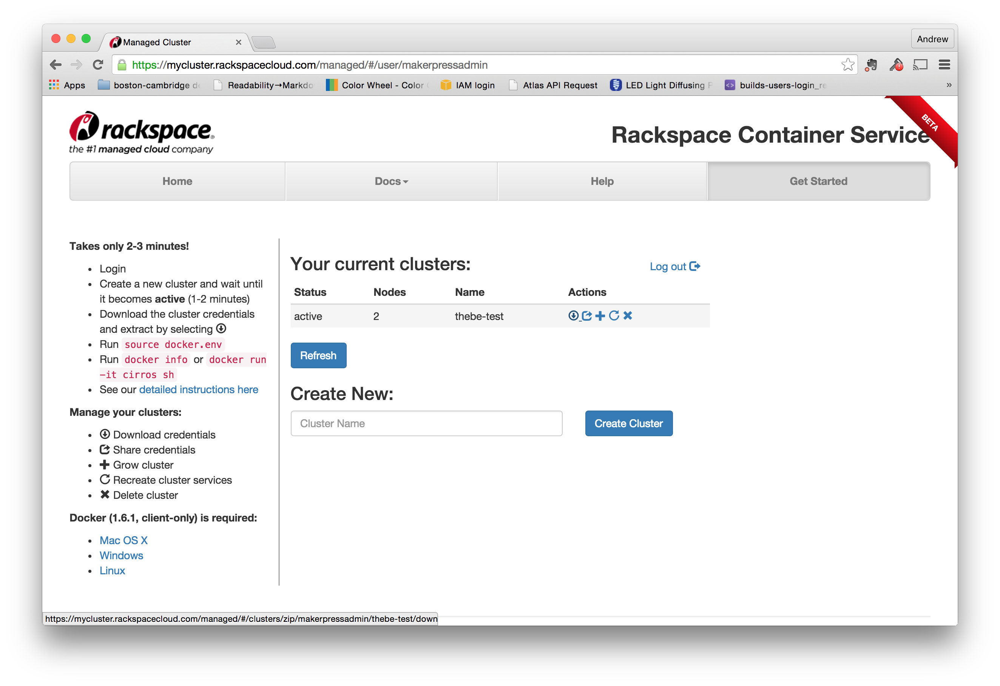

Creating a swarm cluster on Rackspace
Once you've got the two servers set up, you're ready to create a swarm cluster. First, log into the rackspace cluster manager. From the main page, create a new cluster (right now there's only 1 button to push). I've named mine thebe-test:

Download the credentials for the swarm
Once you've got the cluster running, you'll need to download the credentials file by clicking the "Download credentials" link in the "Action" area. (It looks like a circle with an arrow pointing down.)
When you unzip it, you'll see a new directory whose name looks like a UUID or a swarm id.
$ unzip thebe-test.zip
Archive: thebe-test.zip
creating: e1c3155e-a0f2-4e8b-acb8-de123e8dd3c6/
inflating: e1c3155e-a0f2-4e8b-acb8-de123e8dd3c6/ca.pem
inflating: e1c3155e-a0f2-4e8b-acb8-de123e8dd3c6/README.md
inflating: e1c3155e-a0f2-4e8b-acb8-de123e8dd3c6/ca-key.pem
inflating: e1c3155e-a0f2-4e8b-acb8-de123e8dd3c6/docker.env
inflating: e1c3155e-a0f2-4e8b-acb8-de123e8dd3c6/cert.pem
inflating: e1c3155e-a0f2-4e8b-acb8-de123e8dd3c6/key.pem
$ cd e1c3155e-a0f2-4e8b-acb8-de123e8dd3c6/
$ ls -la
total 48
drwxr-xr-x@ 8 apple staff 272 Aug 28 10:36 .
drwx------+ 56 apple staff 1904 Sep 1 14:50 ..
-rw-r--r--@ 1 apple staff 3177 Aug 28 10:36 README.md
-rw-r--r--@ 1 apple staff 1766 Aug 28 10:35 ca-key.pem
-rw-r--r--@ 1 apple staff 1119 Aug 28 10:35 ca.pem
-rw-r--r--@ 1 apple staff 1086 Aug 28 10:35 cert.pem
-rw-r--r--@ 1 apple staff 153 Aug 28 10:36 docker.env
-rw-r--r--@ 1 apple staff 1679 Aug 28 10:35 key.pem
$
You'll see the following files inside this new directory:
- README.md - a set of instructions with how to use the credentials
- ca.pem - Certificate Authority, used by clients to validate servers
- cert.pem - Client Certificate, used by clients to identify themselves to servers
- key.pem - Client Private Key, used by clients to encrypt their requests
- ca-key.pem - Certificate Authority Key, private file used to generate more client certificates.
- docker.env - Shell environment config file
Install Docker 1.6 on your client
The Rackspace cluser service is currently tied to Docker 1.6, so you'll need to install that version on your client. The good things is that it's just a single compiled binary, so all you have to do is put it on your path. (Note: if you already have a later version of Docker installed, you can doenload the file and give it a name like docker16 so that you don't have a conflict.)
Set up the Docker environment variables
Once you've downloaded the credentials, just scp the file over, like this:
scp your-credential-file.zip root@rackspace-swarm-test:.
Once it's copied, login to the server, unzip it. Run the docker.env file inside your new directory in order to set your credentials so that you can access the swarm:
$ cd e1c3155e-a0f2-4e8b-acb8-de123e8dd3c6/
$ source docker.env
You can use docker info to see the setup:
# docker info
Containers: 12
Images: 8
Storage Driver:
Role: primary
Strategy: spread
Filters: affinity, health, constraint, port, dependency
Nodes: 2
e1c3155e-a0f2-4e8b-acb8-de123e8dd3c6-n1: 104.130.0.51:42376
└ Containers: 6
└ Reserved CPUs: 0 / 12
└ Reserved Memory: 0 B / 2.1 GiB
└ Labels: executiondriver=native-0.2, kernelversion=3.12.36-2-rackos, operatingsystem=Debian GNU/Linux 7 (wheezy) (containerized), storagedriver=aufs
e1c3155e-a0f2-4e8b-acb8-de123e8dd3c6-n2: 104.130.0.52:42376
└ Containers: 6
└ Reserved CPUs: 0 / 12
└ Reserved Memory: 0 B / 2.1 GiB
└ Labels: executiondriver=native-0.2, kernelversion=3.12.36-2-rackos, operatingsystem=Debian GNU/Linux 7 (wheezy) (containerized), storagedriver=aufs
Execution Driver:
Kernel Version:
Operating System:
CPUs: 24
Total Memory: 4.2 GiB
Name: cbf73ed2e215
ID:
Http Proxy:
Https Proxy:
No Proxy:
Start a container on the swarm
Once you get all the credentials set up, using the swarm looks a lot like using regular old docker, except now everything is running on a cluster.
For example, here's how you start a notebook on the swarm
docker run -d \
-p 8888 \
ipython/scipystack \
/bin/sh -c 'ipython notebook --ip=0.0.0.0 --no-browser'
To see the status, do a docker ps
# docker ps
CONTAINER ID IMAGE COMMAND CREATED STATUS PORTS NAMES
e13c8fdc2ce8 ipython/scipystack:latest "/bin/sh -c 'ipython 4 seconds ago Up 5 seconds 104.130.0.51:49153->8888/tcp e1c3155e-a0f2-4e8b-acb8-de123e8dd3c6-n1/dreamy_elion
From the output, you can see that the notebook server is running at 104.130.0.51:49153. Opening this in the browser will let you use the web UI.